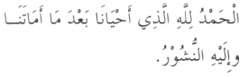

"All praise is for Allah who gave us life after having taken it from us and unto Him is the resurrection."
Reference: Al-Bukhari, cf. Al-Asqalani, Fathul-Bari 11/113; Muslim 4/2083

"None has the right to be worshipped except Allah, alone without associate, to Him belongs sovereignty and praise and He is over all things wholly capable. How perfect Allah is, and all praise is for Allah, and none has the right to be worshipped except Allah, Allah is the greatest and there is no power nor might except with Allah, The Most High, The Supreme. O my Lord forgive me."
Reference: Whoever says this will be forgiven, and if he supplicates Allah, his prayer will be answered; if he performs ablution and prays, his prayer will be accepted. Al-Bukhari, cf. Al-Asqalani, Fathul-Bari 3/39, among others. The wording here is from Ibn Majah 2/335.

"All praise is for Allah who restored to me my health and returned my soul and has allowed me to remember Him."
Reference: At-Tirmithi 5/473. See Al-Albani's Sahih Tirmiihi 3/144.


3:190
Indeed, in the creation of the heavens and the earth and the alternation of the night and the day are signs for those of understanding.
3:191
Who remember Allah while standing or sitting or [lying] on their sides and give thought to the creation of the heavens and the earth, [saying], "Our Lord, You did not create this aimlessly; exalted are You [above such a thing]; then protect us from the punishment of the Fire.
3:192
Our Lord, indeed whoever You admit to the Fire - You have disgraced him, and for the wrongdoers there are no helpers.
3:193
Our Lord, indeed we have heard a caller calling to faith, [saying], 'Believe in your Lord,' and we have believed. Our Lord, so forgive us our sins and remove from us our misdeeds and cause us to die with the righteous.
3:194
Our Lord, and grant us what You promised us through Your messengers and do not disgrace us on the Day of Resurrection. Indeed, You do not fail in [Your] promise."
3:195
And their Lord responded to them, "Never will I allow to be lost the work of [any] worker among you, whether male or female; you are of one another. So those who emigrated or were evicted from their homes or were harmed in My cause or fought or were killed - I will surely remove from them their misdeeds, and I will surely admit them to gardens beneath which rivers flow as reward from Allah , and Allah has with Him the best reward."
3:196
Be not deceived by the [uninhibited] movement of the disbelievers throughout the land.
3:197
[It is but] a small enjoyment; then their [final] refuge is Hell, and wretched is the resting place.
3:198
But those who feared their Lord will have gardens beneath which rivers flow, abiding eternally therein, as accommodation from Allah . And that which is with Allah is best for the righteous.
3:199
And indeed, among the People of the Scripture are those who believe in Allah and what was revealed to you and what was revealed to them, [being] humbly submissive to Allah . They do not exchange the verses of Allah for a small price. Those will have their reward with their Lord. Indeed, Allah is swift in account.
3:200
O you who have believed, persevere and endure and remain stationed and fear Allah that you may be successful.
Indeed, in the creation of the heavens and the earth and the alternation of the night and the day are signs for those of understanding.
3:191
Who remember Allah while standing or sitting or [lying] on their sides and give thought to the creation of the heavens and the earth, [saying], "Our Lord, You did not create this aimlessly; exalted are You [above such a thing]; then protect us from the punishment of the Fire.
3:192
Our Lord, indeed whoever You admit to the Fire - You have disgraced him, and for the wrongdoers there are no helpers.
3:193
Our Lord, indeed we have heard a caller calling to faith, [saying], 'Believe in your Lord,' and we have believed. Our Lord, so forgive us our sins and remove from us our misdeeds and cause us to die with the righteous.
3:194
Our Lord, and grant us what You promised us through Your messengers and do not disgrace us on the Day of Resurrection. Indeed, You do not fail in [Your] promise."
3:195
And their Lord responded to them, "Never will I allow to be lost the work of [any] worker among you, whether male or female; you are of one another. So those who emigrated or were evicted from their homes or were harmed in My cause or fought or were killed - I will surely remove from them their misdeeds, and I will surely admit them to gardens beneath which rivers flow as reward from Allah , and Allah has with Him the best reward."
3:196
Be not deceived by the [uninhibited] movement of the disbelievers throughout the land.
3:197
[It is but] a small enjoyment; then their [final] refuge is Hell, and wretched is the resting place.
3:198
But those who feared their Lord will have gardens beneath which rivers flow, abiding eternally therein, as accommodation from Allah . And that which is with Allah is best for the righteous.
3:199
And indeed, among the People of the Scripture are those who believe in Allah and what was revealed to you and what was revealed to them, [being] humbly submissive to Allah . They do not exchange the verses of Allah for a small price. Those will have their reward with their Lord. Indeed, Allah is swift in account.
3:200
O you who have believed, persevere and endure and remain stationed and fear Allah that you may be successful.